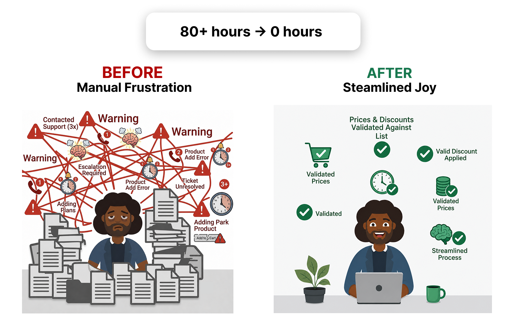

Streamlining Member Verification: Automating Loyalty Rewards for Race Organizers
High-Level Impact
Eliminated Manual Overhead: Replaced a process requiring 80+ hours of post-registration validation work per event with an automated system, freeing organizers from labour-intensive credential cross-referencing.
Closed a Critical Feature Gap: Delivered functionality competitors had already begun shipping, restoring product parity and positioning Race Roster as a viable platform for membership-aware event management.
Scalable for All Organizer Tiers: Designed an upload-and-map validation flow that works seamlessly for small boutique races and large-scale events alike, without requiring manual intervention after setup.
The Problem
Event organizers wanted to extend perks—discounts, free products, exclusive access—to participants holding valid running club or membership credentials. Without a native solution, they resorted to a costly workaround: letting registrants add a perk to their cart, then manually cross-referencing every purchase against a membership list after registration closed. At scale, this consumed 80+ hours per event—a burden that medium and large organizers simply could not sustain, and that smaller teams could not afford to repeat.
Understanding the Audience: A Tiered Painpoint Matrix
| User Segment | Primary Painpoint | Strategic Requirement |
|---|---|---|
| Small Event Organizers (1–5 people) | Any manual post-registration task consumes a disproportionate share of limited staff capacity. | A simple upload-and-confirm flow requiring minimal technical knowledge to configure. |
| Medium Event Organizers | High participant volume but constrained operations; cannot sustain 80+ hours of manual validation per event. | Automated matching logic that runs without intervention once the validation list is uploaded. |
| Large / Elite Event Organizers | Managing thousands of registrants across multiple membership tiers; the existing workaround was not viable at this scale. | Robust column-mapping and error-handling to process large validation lists reliably and without data loss. |
Design Logic: Narrowing Scope to Ship with Confidence
With a 2–3 week sprint and a mid-project PM handover, the priority was scope clarity over comprehensiveness. Rather than designing for every conceivable membership scenario, I worked with the PM to constrain the validation framework to three universally applicable identifiers: First Name, Date of Birth, and a unique Membership Identifier. This kept organizer-facing configuration simple and reduced the error-state surface area significantly.
Component Reuse for Speed: I audited existing upload and column-mapping components across the platform, evaluating each for error frequency and UX consistency. The Organizational-level uploader was the strongest candidate—fewest known errors, most stable mapping behaviour—so the feature was anchored there, with one outstanding error resolved in parallel to unblock launch.
Flow Architecture: I organized the high-fidelity designs into discrete functional flows—Benefits configuration, upload and column mapping, and the reimport flow—making the eventual handover to Frontend and Backend clear enough to walk through and sign off in a single session.

.png)
The Solution: A Self-Serve Validation Engine
1. Validation List Upload:
Organizers upload a CSV containing participant credentials mapped to three core identifiers—First Name, Date of Birth, and Membership Number—covering the most common real-world membership structures without overcomplicating configuration.
2. Intelligent Column Mapping:
A mapping interface lets organizers align their file's columns to the platform's expected fields, accommodating the variation in how different running organizations export their member data.
3. Automated Eligibility Matching:
At the point of registration, the system cross-references the registrant's submitted details against the uploaded list in real time, automatically applying the designated perk—discount, free product, or access tier—if a match is confirmed.
4. Reimport Flow:
An updated validation list can be uploaded at any point before registration closes, ensuring organizers can refresh their membership data without disrupting active registrations.
Reflection & Lessons Learned
- Technical Conversations as a Design Tool: Direct sessions with Backend developers were unexpectedly valuable for mapping out UX logic. Understanding how validation matching worked at a data level allowed me to design flows that were not just visually coherent but technically accurate—reducing the likelihood of edge cases surfacing post-launch.
- Scope Discipline as a Feature: Constraining validation to three identifiers was initially a pragmatic response to timeline pressure. In retrospect, it was also the right design decision—it kept organizer-facing configuration simple, reduced error states, and made the feature shippable without sacrificing the core use case. Constraints, when chosen deliberately, become design assets.